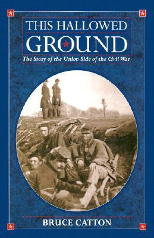

This Hallowed Ground
⭐️⭐️⭐️⭐️
Format: audio (18 hours 55 minutes)
If you're looking for a good, yet succint, review of the Civil War (from the northern army's perspective), you'd be hard-pressed to find one that does it better than this. I have read (or listened to the equivalent of) thousands and thousands of pages about the American Civil War, the contributors, players, circumstances, and events. Some are biographies. Others are focused on the political aspects. Some are intensely detailed about troop movements within battles. This one barely touches on the politics of the time. While it covers battles, and some intra-battle movements, I feel like it didn't get too detailed, and did a good job of discussing the significance of battles to the overall war. Any reader could benefit from having memorized maps of the south, and even some battlegrounds. But even without those, this will help remind or educate people of the events of that war, and sprinkle in a variety of tidbits which even I hadn't heard before.
- Previously: The Eye of Minds
- Next: The Best Gifts